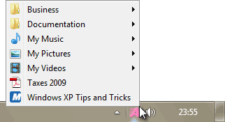
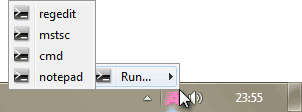
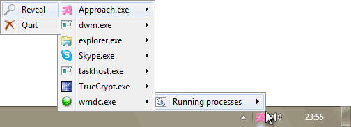

KO Approach can create a special folder named KO Approach Items where you can store items to which you want to have immediate access. These items may include:
- shortcuts to favorite programs;
- shortcuts to Web addresses;
- documents that you often work with.
To open the KO Approach Items folder:
- Open the Features tab either by double-clicking the KO Approach Tray icon or choosing Options... from the Tray Menu;
- Click the Options... button.
- The Approach Items dialog will appear.
- Click the Browse Approach Items.... button.
KO Approach will display the content of the KO Approach Items folder. All files and folders found in this directory will appear on the Approach Items menu. You can create shortcuts to your favorite programs and documents, or place actual files and folders here. After you have organized the items according to your preferences, you can activate the Approach Items menu by single-clicking the Tray icon:

Warning: Putting important files into the KO Approach Items folder is highly discouraged as all its content may be deleted, should you choose to remove KO Approach. Instead, consider storing your files elsewhere (e.g., My Documents folder) and creating shortcuts to them inside the KO Approach Items folder.
The _Target Shortcut
Alternatively to placing items in the KO Approach Items folder, you can create a shortcut named _Target (notice the underscore character) pointing to another folder where your favorite files are already residing. This instructs Approach Items to read the contents of the target folder as if they were "its own," i.e., stored inside the KO Approach Items directory. For example, you may want KO Approach to display the contents of My Documents by creating a shortcut to it and changing the shortcut's name to _Target:

Note: By design, creating the _Target shortcut will re-point menu contents to an entirely different folder thus rendering all the other items inside the KO Approach Items directory inaccessible via the menu. All programmatic menu elements will still be accessible.
Additional Elements
You can insert additional programmatic elements into the Approach Items menu, as well as change the order of elements as they appear in the menu. To do either, open the Approach Items Options window from the Features tab.
For example, KO Approach features the Run menu displaying a list of most recent commands typed in the Windows Explorer's Run window:

KO Approach can also display a list of Running processes, reveal the executable file of a process in Windows Explorer, or quit the process:

Warning: When quitting a process, all unsaved data gets lost and cannot be recovered.